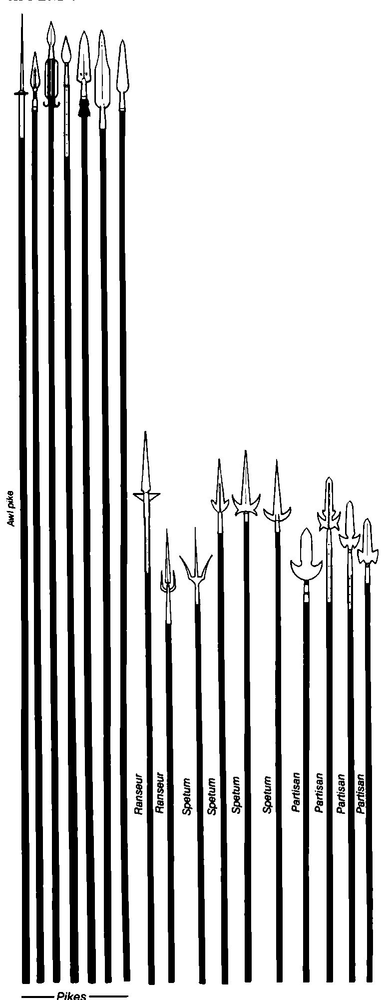

党卫矛 · Partisan
这种长柄武器基本上是一支矛，通常带有牛舌刃；在匕首刃下方加上一对小斧头。这样，在矛的刺击之外，又增加了侧面斧刃的防御用途以及切割、穿透能力。后期的党卫矛逐渐改变斧刃，使它们几乎无法再被认作斧刃。波希米亚耳勺就是典型例子：这种党卫矛把斧刃改造成穿刺尖，主要用来对付板甲，同时具备类似叉枪的功能。三叉枪、叉枪和党卫矛之间的混淆非常常见，
尤其是后期党卫矛在侧刃上增加了三叉枪式突起和叉枪式捕捉空隙时。
因此，矛系由真正的矛、长矛或长枪、三叉枪、叉枪和党卫矛组成。这个类别中的所有武器，本质上都是装在坚固长柄顶端的匕首，只是加上了各种构件，使武器以某种方式更加有效。
图版标签包括：刺针长枪 Awl pike、长枪 Pikes、叉枪 Ranseurs、三叉枪 Spetums、党卫矛 Partisans。图中保留原英文标签，以下为单独裁切的实质性武器图版：
